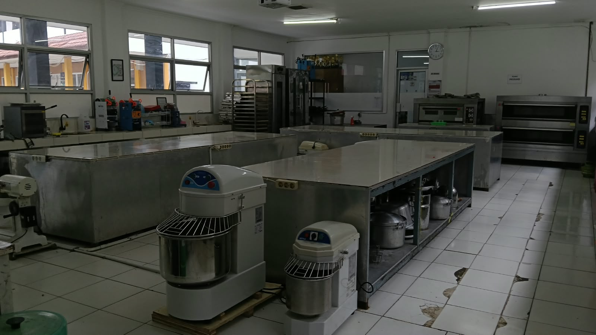
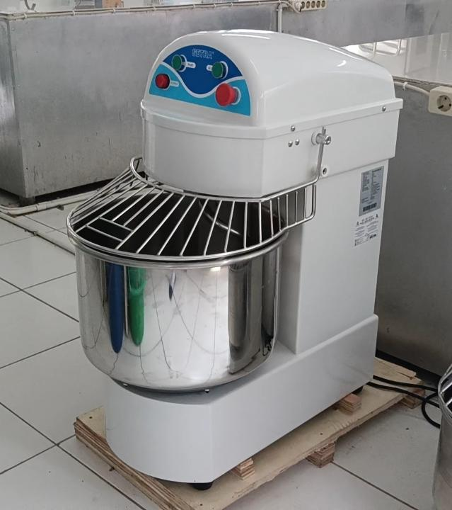
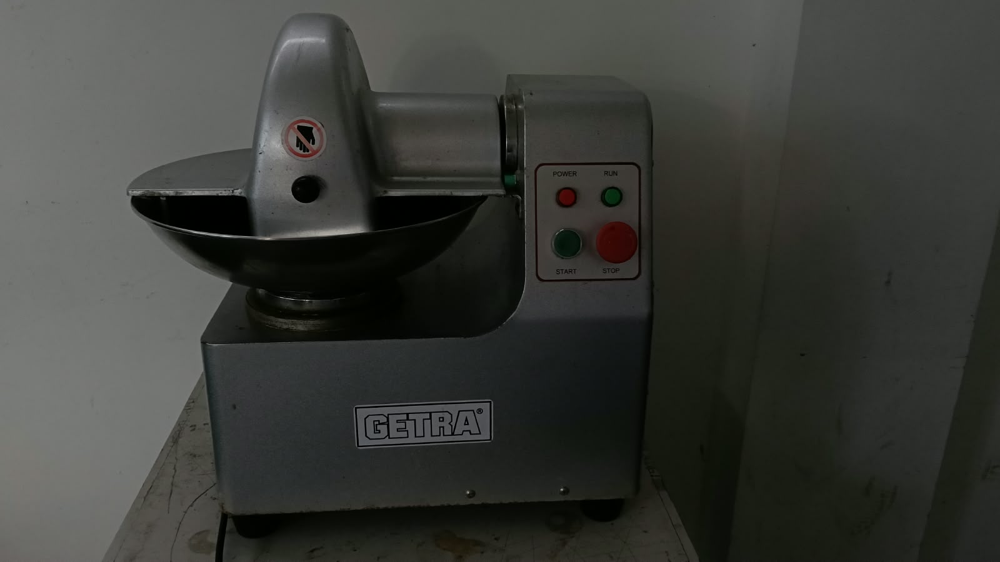

SMKN 1 Cipanas
Jelajahi Jurusan ↓APHP adalah Agribisnis Pengolahan Hasil Pertanian. Jurusan yang mempelajari bagaimana mengubah bahan mentah pertanian seperti singkong, buah, sayur, dan rempah menjadi produk olahan pangan yang awet, higienis, dan punya nilai jual tinggi.
Di SMKN 1 Cipanas kamu belajar 3 hal utama: Teknologi Pengolahan, Keamanan Pangan, dan Kewirausahaan.
Mencetak lulusan yang terampil bekerja di pabrik pangan, QC, dan lab.
Mengubah bahan baku murah jadi produk mahal seperti keripik, selai, tepung.
Dengan teknik pengawetan, hasil panen tidak cepat busuk.
Mendorong siswa punya brand pangan sendiri.

Cara Penggunaan: Masukkan bahan ke bowl > Tutup pengaman > Tekan hijau ON > Tunggu kalis > Tekan merah STOP.

Cara Penggunaan: Masukkan bahan ke bowl > Tutup > Tekan POWER + START > Biarkan mencacah > Tekan STOP jika sudah halus. Jangan masukkan tangan!